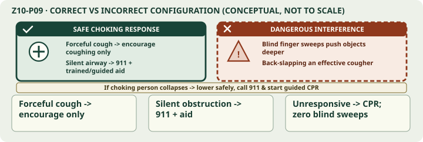

Z10-P09 · Wilderness medicine · New manuscript
Respond to severe choking while avoiding blind finger sweeps
Separate effective coughing from silent severe airway obstruction and escalate promptly within lay boundaries.
When it applies · Conscious or collapsing person who suddenly cannot breathe, speak, or cough forcefully while eating or handling small objects.
Equipment · Voice communication and phone access for immediate 911 activation.

Actions
- If the person is coughing effectively, encourage coughing and watch for a weak cough, inability to speak or breathe, or worsening responsiveness.[M04]
- Call 911 for severe obstruction. Follow dispatcher or age-appropriate training. Adults and children use a different thrust technique from infants. Tell dispatch if the patient is an infant, in late pregnancy, or cannot be encircled.[M04, M25]
- If the person becomes unresponsive, begin dispatcher-guided CPR. Remove an object only if you see it when opening the airway. Never sweep blindly.[M04, M25]
Failure recognition · Performing a blind finger sweep in the mouth, which can push a lodged piece of food deeper and seal the airway completely.[M04]
Verify · Monitor breathing and responsiveness until advanced care arrives.[M04, M25]
Stop or change course · Any worsening cyanosis, silence, or collapse requires immediate 911 escalation and uninterrupted dispatcher-guided emergency care.[M04, T02]
Evidence and editorial notes
- M04 · American Heart Association · 2025 Adult Basic Life Support (2025)
- Section: 10 Adult Foreign-Body Airway Obstruction, sections 10.1–10.3 · Conditions: Responsive adults with mild or severe airway obstruction; separate unresponsive branch
Support: Watch an effective cough. Activate EMS for severe signs and provide trained or dispatcher-directed care. Begin CPR when unresponsive and avoid blind finger sweeps.
Limitations: Infants and children require the pediatric protocol. Pregnancy and inability to encircle the abdomen change thrust technique. · Conflicting evidence: See A02 claim audit for boundaries.
Editorial note: Keeps airway maneuvers bounded by formal training and 911 dispatcher guidance. · Specialist reviewer: EMS and emergency medicine
Primary source · checked 2026-11-25 - M25 · American Heart Association · 2025 Pediatric Basic Life Support (2025)
- Section: Recognition of cardiac arrest; Pediatric foreign-body airway obstruction · Conditions: Infant or child lay emergency
Support: Use pediatric CPR and choking guidance with dispatcher or training. Infant chest thrusts differ from older-child abdominal thrusts; avoid blind sweeps.
Limitations: Adult pregnancy and abdominal encirclement exceptions are in M04. Escalate equipment fit and age transitions. · Conflicting evidence: See A02 claim audit for boundaries.
Editorial note: Added in A02 to separate a consequential source boundary. · Specialist reviewer: Pediatric EMS and resuscitation
Primary source · checked 2026-11-25 - T02 · American Red Cross · First Aid Steps (current web edition)
- Section: First Aid Steps > Call 9-1-1 · Conditions: Lay emergency response to unresponsiveness, abnormal breathing or severe bleeding
Support: Activate EMS and get needed equipment. Follow dispatcher directions and act within training.
Limitations: Remote locations may delay EMS arrival, requiring sustained stabilization after activation. · Conflicting evidence: None; aligns with NPS-E.
Editorial note: Mandates early emergency activation and dispatcher adherence. · Specialist reviewer: EMS and wilderness medicine
Primary source · checked 2026-11-24
Source lineage · NIH MedlinePlus Choking; new manuscript · Classification · New manuscript.